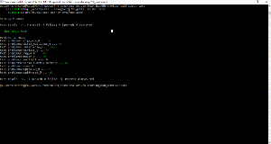

Testes funcionais em Rust
Como fazer testes em Rust? Aqui segue uma forma, e algumas coisas que descobri sobre a linguagem.
Aprendendo a programar em Rust, uma coisa que chamou muito a minha atenção foi o esquema para geração de documentação a partir do próprio código fonte. Dentro disso, como gerar testes funcionais como parte da documentação. Tudo muito prático, tudo facilitando a escrita desses testes.
A linguagem Rust tem O Livro. Vamos começar pela parte que fala sobre Comentários.
Os comentários normais são feitos com //, tanto em uma linha dedicada a isso como ao final de um comando. Começa a ficar interessante se usarmos ///, pois assim teremos suporte a Markdown. Esse é o Doc comment. Há, por fim, uma variação, ||!, que serve para comentários gerais, por exemplo, descrever o que faz uma biblioteca.
A diferença está em que /// se aplica ao código que segue imediatamente ao comentário, e //! se aplica a todo o código de um arquivo, como se fosse um cabeçalho. E duas barras // são os comentários específicos ao código, sem propósito de testes ou geração de documentação.
E dentro dos comentários de documentação, podemos colocar trechos de código, seguindo o que o markdown nos permite:
/// A função `negue` deve receber um valor boleano (verdadeiro ou falso) e
/// retornar a negação desse valor.
///
/// # Examples
///
/// ```
/// extern crate rust;
/// assert_eq!(true, rust::problems::negue(false));
/// assert_eq!(false, rust::problems::negue(true));
/// ```
pub fn negue(value:bool) -> bool {
!value
}
O código acima faz parte de um projeto meu, o Test Driven Learning. O código completo está em 000_novice/rust.
Temos três elementos nesse comentário. Nas duas primeiras linhas, há o comentário descritivo. A seguir, um título na notação markdown, e por fim, o código, que está entre a marcação de código. Logo abaixo, a função.
Esse código são os testes funcionais. A ferramenta de testes (função do sistema cargo), executará cada linha quando os testes forem executados. Note que se estiver escrevendo uma biblioteca, só será possível realizar os testes nas funções que forem públicas.
Para executar os testes, executa-se o comando cargo test na raiz do projeto:

E para gerar a documentação, basta executar o comando cargo doc --package NOME, em que NOME é o que está definido no arquivo Cargo.toml. Isso gerará todos os arquivos necessários (fontes, css, html, javascript, etc) necessários à apresentação. O index estará em doc/lib/index.html.
Nesse link está a saída para esse exemplo.